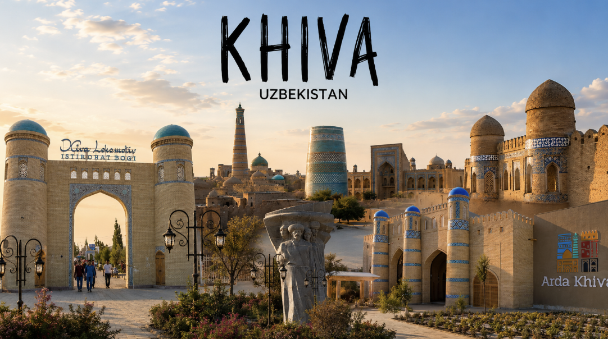
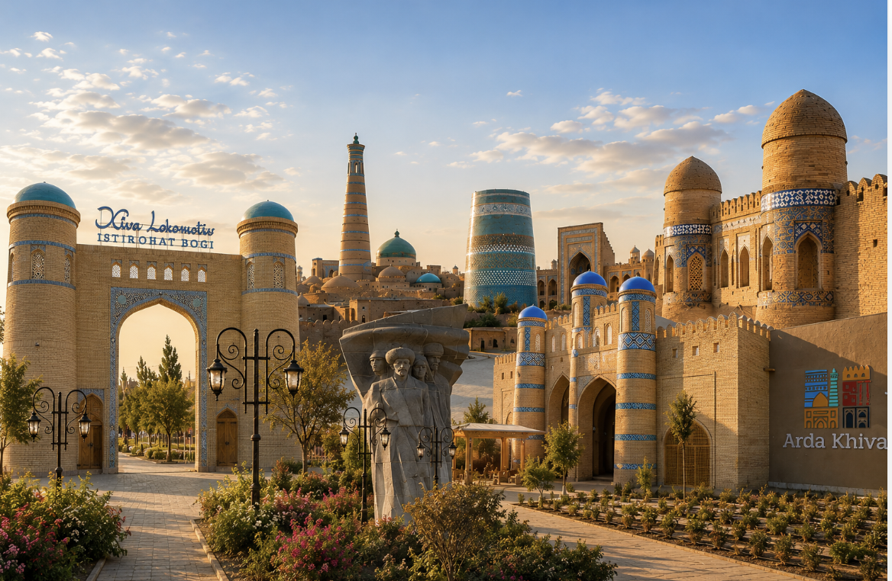
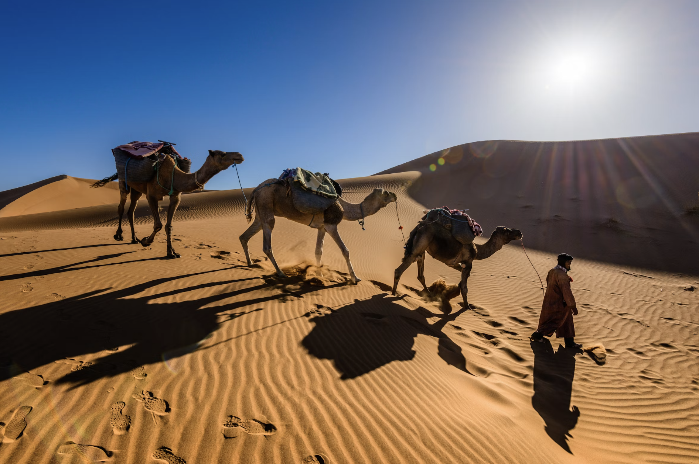
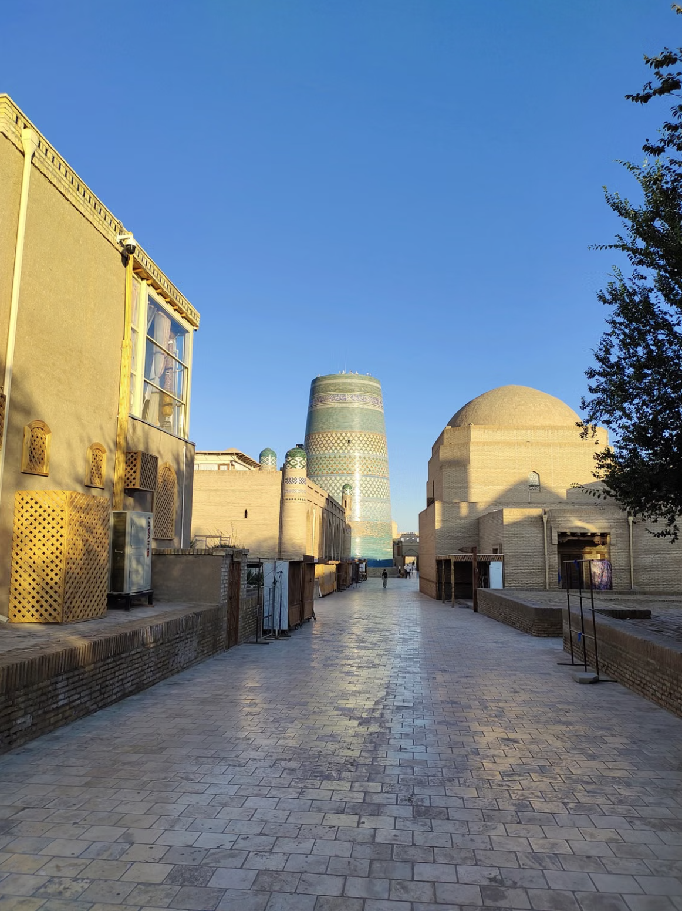
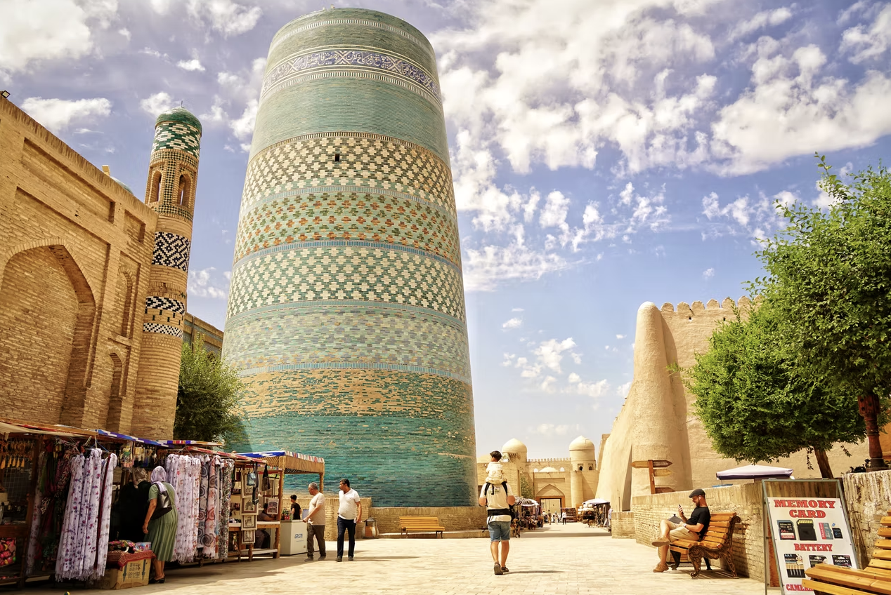
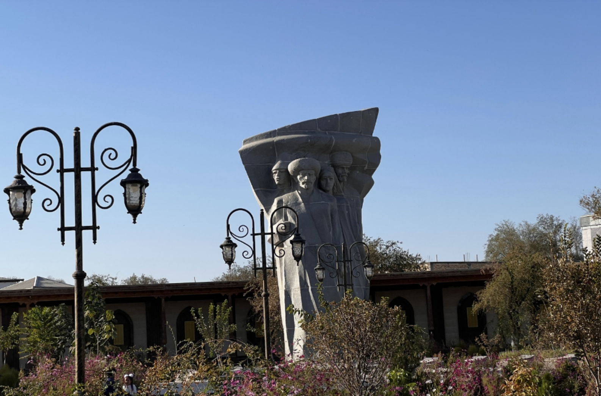

Tash Hauli Palace
Known as the "Stone Palace," Tash Hauli is decorated with intricate stucco, frescoes, and spectacular carved ceilings.

✨ Discover Khiva
Walk through centuries of history in the heart of Uzbekistan, where ornate madrassahs, graceful minarets, and caravanserais bring the Silk Road to life.
Khiva is one of the best-preserved historic cities in Central Asia. Its old town, Itchan Kala, is a UNESCO World Heritage site, surrounded by red clay walls and filled with palace courtyards, grand mosques, and atmospheric bazaars.





Explore the UNESCO-listed inner city with 50+ monuments, madrassahs, and ancient streets.

A 25-hectare entertainment complex with water park, amphitheater, gondola rides, and an oriental bazaar.

A peaceful recreation park with an artificial lake, musical fountains, an amphitheater, and beautiful gardens.

A moving memorial dedicated to WWII heroes, located near Flora Restaurant in the heart of Khiva.
Every corner of Khiva carries a story. Caravanserais once welcomed traders from China, Persia, and Europe. Madrasahs taught poetry, astronomy, and religion. The city retains the rhythm of daily life, with craftsmen, cafes, and musicians keeping tradition alive.
Known as the "Stone Palace," Tash Hauli is decorated with intricate stucco, frescoes, and spectacular carved ceilings.
Dedicated to the patron saint and poet of Khiva, this peaceful mausoleum is a place of reverence and craftsmanship.
Khiva was a key trading hub. Its market streets still echo with the exchange of carpets, ceramics, spices, and stories.
Sample plov, manti, shurpa, and sweet halva at small family-run restaurants in the old city.
* Recommended to open in any of these maps